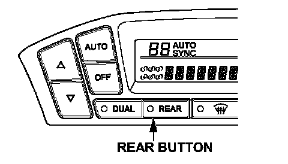
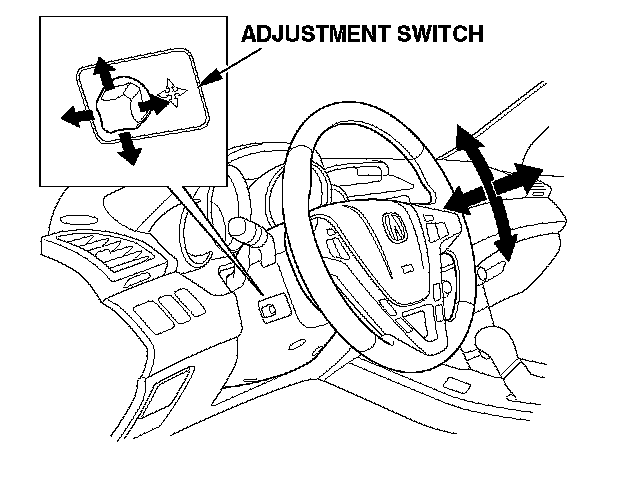
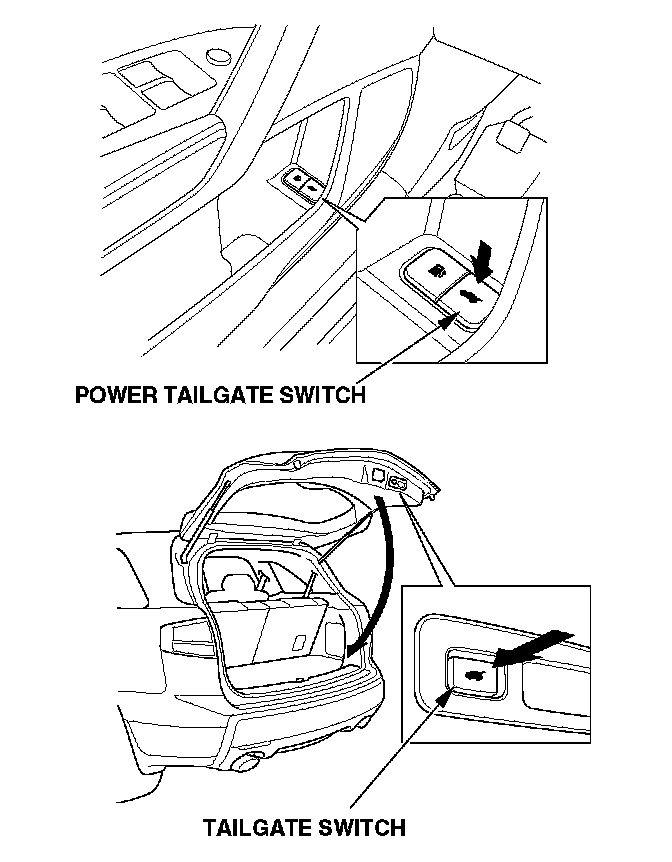
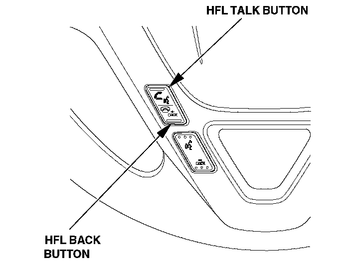

New Model Information 1
NOTE:For more information on the topics in this section, refer to the 2007 MDX Service Manual, the 2007 MDX Owner's Manual, and the technical training modules indicated below.
HDS (Honda Diagnostic System) Software Version
HDS software is 2.006.010 or later.
Horsepower
The horsepower rating (per SAE standards) for the 2007 MDX is 300 hp.
SH-AWD (Super-Handling All-Wheel Drive) System
This full-time, all-wheel-drive system automatically controls the transfer of varying amounts of engine torque to each wheel independently - according to driving conditions - helping to enhance vehicle stability. The SH-AWD torque distribution monitor on the MID has a torque indicator for each wheel. Each torque indicator is displayed as a bar graph divided into five segments. The number of segments represents the amount of torque being distributed to each wheel.
If needed, SH-AWD can increase the rear wheels' speed up to 5 percent over the front wheels. The system can also vary the torque between the left and right rear wheels from a 50/50 torque split to a 100/0 torque split.
The drain and refill timing for the rear differential is calculated by the Maintenance Minder. This maintenance is very important for the proper break-in and longevity of the differential. Always use Honda Genuine ATF-Z1 when refilling.
For more information, refer to technical training module ATC58.
NOTE:
^ If the rear differential or SH-AWD is replaced, some setup of the SH-AWD is required with the HDS.
^ Be careful when disconnecting hoses at the rear differential to avoid crossing/mixing the hoses during reinstallation. This will prevent water from getting into the differential. Disconnect the front hose at the intermediate joint, and the rear hose from the grommet.
Active Damper System (Sport Models Only)
The active damper system uses electrically controlled dampers on the front and rear suspension. The system consists of front and rear dampers containing magneto-rheological fluid, a control unit, four suspension stroke sensors, and three vertical acceleration sensors. The system also uses VSA (vehicle stability assist) sensor input. The damper fluid contains magnetic particles. Using the electro magnetic coil in each damper, the system is constantly adjusting the dampers to the best setting according to road conditions, vehicle speed, and handling input.
The active damper system is always on. The driver may select between two modes (no default mode exists). In sport mode, the active damper system delivers sportier handling. You can also select the comfort mode for a plusher ride, but the optimal handling performance of the all-wheel-drive vehicle is maintained. Either mode can be used in any operating condition. The active damper system button is located on the center console. The MID displays the selected mode for 5 seconds.
NOTE:
^ The system does not adjust ride height.
^ The dampers cannot be rebuilt.
^ A damper leak will not be visible.
^ Be careful not to damage the electrical connections when working with the dampers. If the connector is damaged, the entire damper must be replaced.
^ If a rear damper or the active damper control unit is replaced, or a rear stroke sensor is disassembled or replaced, the rear dampers must be reinitialized (set the memorization for the rear suspension at full rebound position).
The active damper system indicator on the instrument panel comes on for a few seconds when the ignition is turned to ON (II). If the indicator remains on, the active damper system is disabled and should be checked as soon as possible. If the active damper system becomes disabled, the suspension operates in a conventional manner.
For more information, refer to technical training module 8PC58.
VSA (Vehicle Stability Assist)
A new form of VSA is standard on all models. Using SH-AWD, it combines braking and engine control for enhanced steering and traction in various road conditions. It detects oversteer earlier and uses SH-AWD to reduce rear drive torque at a prescribed value to help prevent oversteer. VSA can be turned off by pressing the VSA OFF button on the left side of the dashboard for 1 second. When the system is off, the VSA activation indicator in the instrument panel stays on as a reminder. VSA turns on every time the engine is started, even if it was turned off the last time the vehicle was driven.
Trailer Stability Assist
VSA includes a new trailer stability assist feature to help reduce trailer oscillation or swaying. Trailer stability assist uses the VSA sensors to detect increasing trailer oscillation. It reduces throttle or applies the brakes in a side-to-side sequence, or all four wheels together, to dampen the oscillation as quickly as possible, and reduce the speed of the vehicle. The system is designed to give the driver an opportunity to reduce vehicle speed first. If the driver does not reduce speed or reducing speed is not enough to stabilize the vehicle, trailer stability assist will activate.
NOTE:
If VSA is turned OFF, trailer stability assist is also turned OFF.
HVAC - Triple-Zone Climate Control with Humidity Control and Partial Recirculation Triple Zones

The HVAC system can control the temperature independently in three zones: driver, front passenger, and second row seats. Triple-zone control is activated when the DUAL and REAR buttons are on. The system uses only one temperature sensor, but it makes different calculations for each zone. The rear temperature can be set only using the controls on the back of the center console, but the driver can choose to synchronize the rear temperature to the front by turning the REAR button off (the words Auto Sync will display on the front control panel).
On models with the navigation system, climate control will adjust the fan speed and vent controls automatically based on criteria like vehicle direction and angle of the sun.
Humidity Control
The new system also adds a humidity sensor to help prevent window fogging. The humidity sensor measures the relative humidity inside the vehicle and calculates the dew point. The system uses ambient temperature and vehicle speed to determine windshield temperature. A comparison of windshield temperature to dew point determines the probability of windshield fogging. If windshield fogging is likely, the system can automatically select heat/defrost mode, change the fan setting, and turn the NC on or off preventing windshield fogging before it occurs.
NOTE:
The humidity sensor is part of the vehicle temperature sensor and is active only when AUTO mode is turned on.
Partial Recirculation
Fresh air and cooler recirculating air are mixed in the blower to reduce the temperature of the intake air. This mode reduces the compressor's workload.
Electric Tilt/Telescopic Steering Wheel

The steering wheel has electric tilt and telescopic adjustment. The control button is located on the left side of the steering column. Push up or down to tilt the wheel. Pull back or push forward to move the wheel closer or further away. This position is saved in the driver-position memory setting.
Power Tailgate (Entertainment Package)

The power tailgate can be opened or closed using the switch in the driver's door pocket or the remote transmitter. To stop the tailgate while it is opening or closing, press the tailgate switch on either the remote transmitter, the driver's door pocket, or the tailgate. The tailgate has auto-reverse and will reverse direction if it meets resistance while opening or closing.
NOTE:
^ The power tailgate can be opened only when all doors are unlocked and the transmission is in P.
^ If the battery is dead, remove the cover on the inside of the tailgate. Push the release lever located on the right to open the tailgate.
^ The power tailgate control unit must be reset if the battery is disconnected or if the No.7 (10 A) fuse is removed while the tailgate is operating.
To reset the tailgate system, do this:
1. Fully close the tailgate manually.
2. Connect the battery terminals, or install the No.7 fuse.
3. The power tailgate will automatically reset.
4. Make sure the tailgate operates properly.
For more information, refer to technical training module ELC91.
Second Row Seat Heaters (Entertainment Package)
The outboard seats in the second row have seat heaters. The switches are located on the center console's rear control panel.
HFL (HandsFreeLink)
To improve driving safety and convenience, all models come with the HFL system. HFL works only with Bluetooth-capable cellular phones that have the hands-free profile. Bluetooth is a radio frequency-based technology that lets portable devices communicate in a wireless environment.
NOTE:
^ The information below outlines the main features of the HFL. For more information, refer to the 2007 MDX Service Manual, visit the website.
^ The HDS can be used to reset the security password.
Voice Control
HFL recognizes simple voice commands, such as phone numbers and names. It uses these commands to automatically dial, receive, and store numbers.
Bluetooth Wireless Technology
Bluetooth is the wireless technology that links the phone to the HFL. The HFL uses a Class 3 Bluetooth, which means the maximum range between the phone and vehicle is 30 feet (10 meters) or less.
Phonebook
The HFL can store up to 50 names and phone numbers in its phonebook. With a paired phone, you can then automatically dial any name or number in the phonebook.
Incoming/outgoing Calls
With a paired phone, the HFL allows you to make and receive calls in the vehicle without holding the phone.
Microphone
The HFL microphone is on the ceiling, between the front seat spotlights. On models with the navigation system, the microphone is shared with the navigation system. Be sure to adjust the airflow from the vents so they do not blow against the microphone on the ceiling.
Audio System
When the HFL is in use, the sound comes through the vehicle audio system speakers. If the audio system is in use while making a call, the HFL overrides the audio system. To change the volume level of incoming calls, use the audio system volume knob.
HFL Buttons
To operate the HFL, use the HFL TALK and BACK buttons on the left side of the steering wheel. On navigation-equipped vehicles, there are two sets of buttons: one for the navigation, climate control, and audio systems, and the other for the phone.
Here is the function of each HFL button:

HFL Talk - This button is used before you give a command, to answer incoming calls, and to confirm system information.
HFL Back - This button is used to end a call, go back to the previous voice control command, and to cancel an operation.
Center Console Display
This information is displayed whether or not the phone is in use. Features include:
Phone - Indicates a phone is currently paired to the HFL.
Roam status (models without navigation system) - Indicates your phone is roaming.
Signal Strength (models without navigation system) - Indicates the network signal strength of the current phone call. Five bars equals full signal strength.
NOTE:
Some phones do not send this information to the center console display.
HFL Phone Book Importation (Models With Navigation)
In addition to the 50 names that can be stored in the HFL phonebook, HFL also allows vehicles with navigation to store an additional 1,000 names in the navigation system itself, and each name can have up to 10 numbers. A limited number of phones have this Bluetooth capability (visit www.handsfreelink.com for compatible phones). The phone must be paired before using phonebook import. The imported phonebook is accessible with the navigation system when any phone is paired, unless it is PIN-protected. See the owner's manual for more details.
NOTE:
^ The imported phonebook cannot be modified. To update the phonebook, do another full import.
^ If the navigation system is replaced, phonebook data must be imported again.